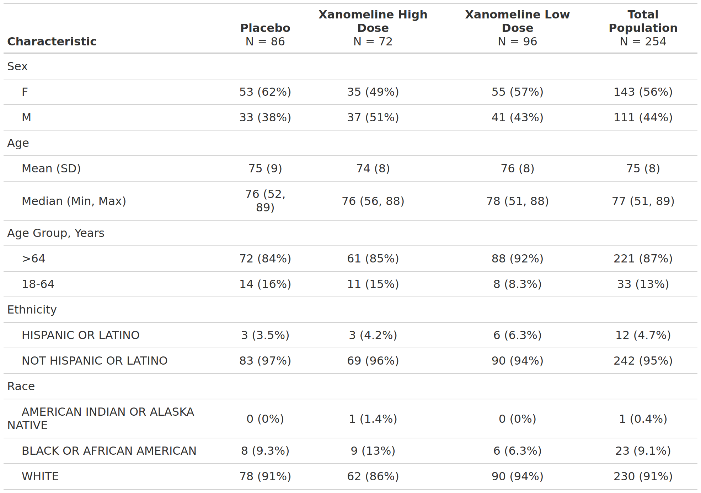

install.packages("cardinalfda")A few years ago {cardinal} started life as a quarto catalog of copy-paste template scripts — a cross-company effort (Boehringer Ingelheim, Moderna, Roche, Sanofi and friends) to open-source a harmonized set of the FDA safety tables everyone in clinical reporting keeps rebuilding from scratch.
It just grew up. cardinal is now on CRAN — installable, versioned, dependency-managed:
Yes, the package is cardinalfda on CRAN (plain cardinal was already taken). Same initiative, same website, now a proper release you can pin in a lockfile and trust to still install next year.
What changed under the hood
If you looked at cardinal a while back, the tables were {rtables}. That’s no longer the engine. The catalog has moved to the {gtsummary} + {cards}/{cardx} + {crane} stack:
{gtsummary}builds the table,{cards}/{cardx}build the ARD (Analysis Results Dataset) behind it,{crane}supplies the pharma-specific bits (e.g.tbl_listing()for listings).
And that middle point is the part I’m most excited about: every cardinal table now comes with an ARD. More on that below.
The anatomy of a cardinal template
The nicest thing about the new layout is that every template tells the same story — and it maps onto how a statistical programmer actually thinks. Each catalog page has the same four tabs: Table Preview → Setup → Build Table → Build ARD. Let’s walk FDA Table 2 (Baseline Demographic and Clinical Characteristics, Safety Population) through it.
1. The IG — the FDA Integrated Guide
cardinal’s templates are drawn from the FDA’s Standard Safety Tables and Figures Integrated Guide (the “IG”), and are indexed by its table numbers — fda-table_02 is IG Table 2. The IG is the specification: it says exactly what the table should contain — the rows, the summary statistics, the population, the footnotes. So there’s never any doubt about what the output is supposed to be.
2. The output snapshot — the preview
Every catalog page opens with a Table Preview — a snapshot of the target output, the “here’s what we’re building” picture. It’s the contract between the IG spec and the code.

3. The actual code
Then the part programmers came for — the actual, runnable code. cardinal ships each IG template as a self-contained script, so nothing is a black box: the template gives you the layout, you supply your ADaM data. Here is the real fda-table_02 template, run against the public {pharmaverseadam} ADSL:
library(dplyr)
adsl <- pharmaverseadam::adsl |>
# removing screen failure observations
filter(TRT01A != "Screen Failure")
tbl <- adsl |>
dplyr::filter(SAFFL == "Y") |>
gtsummary::tbl_summary(
by = dplyr::all_of("TRT01A"),
include = dplyr::all_of(c("SEX", "AGE", "AGEGR1", "ETHNIC", "RACE")),
type = gtsummary::all_continuous() ~ "continuous2",
statistic = list(
gtsummary::all_continuous() ~ c(
"{mean} ({sd})",
"{median} ({min}, {max})"
),
gtsummary::all_categorical() ~ "{n} ({p}%)"
),
label = list(AGEGR1 = "Age Group, Years")
) |>
gtsummary::add_overall(last = TRUE, col_label = "**Total Population** \nN = {N}") |>
gtsummary::remove_footnote_header(columns = dplyr::everything())4. The real output
Because the template is real code over real (public) data, the last step is just to print it — and that same table is what you’d drop into your report:
tbl| Characteristic | Placebo N = 86 |
Xanomeline High Dose N = 72 |
Xanomeline Low Dose N = 96 |
Total Population N = 254 |
|---|---|---|---|---|
| Sex | ||||
| F | 53 (62%) | 35 (49%) | 55 (57%) | 143 (56%) |
| M | 33 (38%) | 37 (51%) | 41 (43%) | 111 (44%) |
| Age | ||||
| Mean (SD) | 75 (9) | 74 (8) | 76 (8) | 75 (8) |
| Median (Min, Max) | 76 (52, 89) | 76 (56, 88) | 78 (51, 88) | 77 (51, 89) |
| Age Group, Years | ||||
| 18-64 | 14 (16%) | 11 (15%) | 8 (8.3%) | 33 (13%) |
| >64 | 72 (84%) | 61 (85%) | 88 (92%) | 221 (87%) |
| Ethnicity | ||||
| HISPANIC OR LATINO | 3 (3.5%) | 3 (4.2%) | 6 (6.3%) | 12 (4.7%) |
| NOT HISPANIC OR LATINO | 83 (97%) | 69 (96%) | 90 (94%) | 242 (95%) |
| Race | ||||
| AMERICAN INDIAN OR ALASKA NATIVE | 0 (0%) | 1 (1.4%) | 0 (0%) | 1 (0.4%) |
| BLACK OR AFRICAN AMERICAN | 8 (9.3%) | 9 (13%) | 6 (6.3%) | 23 (9.1%) |
| WHITE | 78 (91%) | 62 (86%) | 90 (94%) | 230 (91%) |
Prefer not to read the whole script? Every template is also runnable in one line, which sources the shipped script and hands you back the built objects:
env <- run_template("fda-table_02")
env$tbl # the gtsummary table
env$ard # the ARD (see below)The bit I like most: an ARD falls out for free
An ARD (Analysis Results Dataset) is the tidy, machine-readable version of a table — every statistic as a row, before any formatting. It’s the emerging CDISC direction for analysis results, and it’s what makes results reusable, comparable and reviewable rather than locked inside a rendered table.
With the {cards}-based approach, you don’t build the ARD separately — it’s gathered straight from the table you already made:
ard <- gtsummary::gather_ard(tbl)
ard$tbl_summary |>
dplyr::select(dplyr::any_of(
c("group1", "group1_level", "variable", "stat_name", "stat")
)) |>
head(8)# An ARD data frame: 8 × 5
group1 group1_level variable stat_name stat
<chr> <list> <chr> <chr> <list>
1 TRT01A Placebo SEX n 53
2 TRT01A Placebo SEX N 86
3 TRT01A Placebo SEX p 0.616
4 TRT01A Placebo SEX n 33
5 TRT01A Placebo SEX N 86
6 TRT01A Placebo SEX p 0.384
7 TRT01A Placebo RACE n 0
8 TRT01A Placebo RACE N 86 Same numbers as the table, now as data you can filter, diff against a previous run, or feed into a meta-analysis. Table and ARD, from one template — that’s the direction cardinal is heading.
Try it, and come help
Install it, run a template, and if you spot a table your team builds differently, that’s an invitation — cardinal is a collaboration, and new templates are exactly the kind of contribution the initiative wants. The cardinal website has the full catalog, and the pharmaverse examples site is a great next stop for seeing these packages used end to end.
Last updated
2026-10-20 15:02:04.247126
Details
Reuse
Citation
BibTeX citation:
@online{zhu2026,
author = {Zhu, Joe},
title = {Cardinal Is on {CRAN}},
date = {2026-09-23},
url = {https://pharmaverse.github.io/blog/posts/2026-09-23-cardinal-is-on-cran/cardinal-is-on-cran.html},
langid = {en}
}
For attribution, please cite this work as:
Zhu, Joe. 2026. “Cardinal Is on CRAN.” September 23, 2026.
https://pharmaverse.github.io/blog/posts/2026-09-23-cardinal-is-on-cran/cardinal-is-on-cran.html.